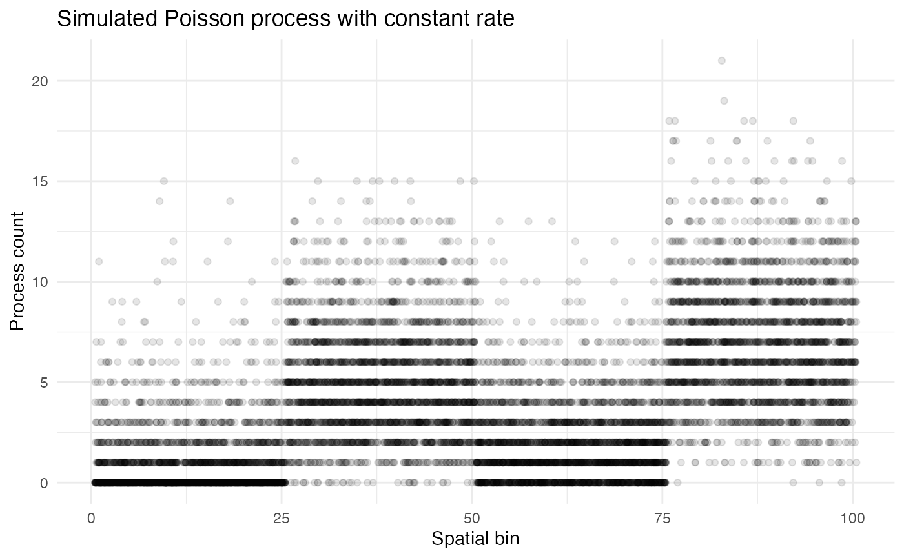
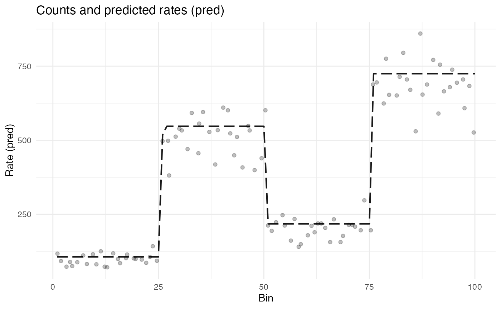
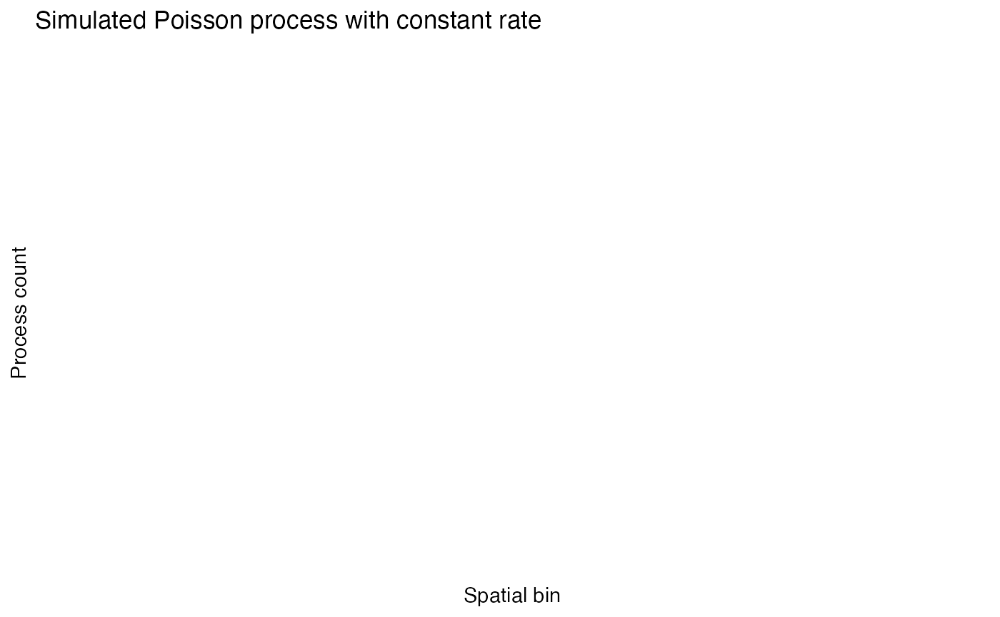

The basics of wisps
Michael Barkasi
2025-10-11
tutorial_basic.RmdSimulating a Poisson process
Suppose you wanted to model some process which generates tokens of a certain type over space. For example, the cells in your body generate RNA molecules through gene transcription and rabbits spread across a forest generate offspring through reproduction. If every instance of the process (e.g., every cell, or every rabbit) in the same place produces tokens at the same rate , then the number of tokens generated in a given region will follow a Poisson distribution with rate parameter equal to , for the number of process instances in the region. As Poisson distributions are linear, it is just as well to ignore and let be the overall rate of token generation in the region . In this case, empirical measures of are obtained simply by summing the tokens produced by all the process instances in .
Real cases of distributed Poisson processes rarely have instances with identical rates. For example, rabbits will reproduce at different rates depending on their age and health and cells will transcribe genes at different rates depending on their type and state. Some of this variation is due to systematic factors, but much of it is due to random noise. This noise is often gamma-distributed, such that if is the mean process rate in , then individual process instances will have rate drawn from a gamma distribution with expected value and variance .
Let’s simulate a Poisson process with gamma-distributed noise with instances spread over a one-dimensional space. The space will be divided into 100 bins:
x <- seq(1, 100)We will randomly distribute 5,000 process instances across the space, for an average of 50 instances per bin. The variable holding these positions will be called bin:
Now suppose that the mean rate is constant across space and equals 1, while the variance between the instances is 2.
lambda <- rep(c(1, 5, 2, 7), each = length(x)/4)
var_gamma <- 2
process_lambda <- rgamma(
n_instances,
shape = lambda[bin]^2/var_gamma,
rate = lambda[bin]/var_gamma
)
count <- rpois(n_instances, process_lambda)These simulated process counts can be plotted as a function of space:
countdata <- data.frame(bin, count)
ggplot2::ggplot(countdata, ggplot2::aes(x=bin, y=count)) +
ggplot2::geom_jitter(height=0, width=0.5, alpha=0.1) +
ggplot2::labs(
title = "Simulated Poisson process with constant rate",
x = "Spatial bin",
y = "Process count"
) +
ggplot2::theme_minimal() +
ggplot2::theme(
panel.background = ggplot2::element_rect(fill = "white", colour = NA),
plot.background = ggplot2::element_rect(fill = "white", colour = NA)
)
##
##
## Parsing data and settings for wisp model
## ----------------------------------------
##
## Model settings:
## buffer_factor: 0.05
## ctol: 1e-06
## max_penalty_at_distance_factor: 0.01
## LROcutoff: 2
## LROwindow_factor: 1.25
## rise_threshold_factor: 0.8
## max_evals: 1000
## rng_seed: 42
## warp_precision: 1e-07
## inf_warp: 450359962.73705
##
## Variable dictionary:
## count: count
## bin: bin
## context: context
## species: species
## ran: ran
## timeseries: timeseries
## fixedeffects:
##
## Parsed data (head only):
## ------------------------------
## count bin context species ran
## 1 3 31 context species ran
## 2 8 79 context species ran
## 3 0 51 context species ran
## 4 3 14 context species ran
## 5 3 67 context species ran
## 6 7 42 context species ran
## ----
##
## Initializing Cpp (wspc) model
## ----------------------------------------
##
## Infinity handling:
## machine epsilon: (eps_): 2.22045e-16
## pseudo-infinity (inf_): 1e+100
## warp_precision: 1e-07
## implied pseudo-infinity for unbounded warp (inf_warp): 4.5036e+08
##
## Extracting variables and data information:
## Found max bin: 100.000000
## No fixed effects detected.
## No time series detected.
## Created treatment levels:
## "ref"
## Context grouping levels:
## "context"
## Species grouping levels:
## "species"
## Random-effect grouping levels:
## "ran"
## Total rows in summed count data table: 100
## Number of rows with unique model components: 1
##
## Creating summed-count data columns and weight matrix:
## Random level 0, 1/1 complete
##
## Making initial parameter estimates:
## Took log of observed counts
## Estimated gamma dispersion of raw counts
## Estimated change points
## Found average log counts for each context-species combination
## Estimated initial parameters for fixed-effect treatments
## Built initial beta (ref and fixed-effects) matrices
## Initialized random-effect warping factors
## Made and mapped parameter vector
## Number of parameters: 10
## Constructed grouping variable IDs
## Size of boundary vector: 11
##
## Fitting model to data
## ----------------------------------------
##
## Setting boundary penalty coefficients
## Initial neg_loglik: 183.522
## Initial neg_loglik with penalty: 185.191
## Initial min boundary distance: 0.25
## Final neg_loglik: 183.287
## Final neg_loglik with penalty: 184.448
## Final min boundary distance: 4.68473
## Number of evaluations: 34
## Checking feasibility of provided parameters
## ... no tpoints below buffer
## ... no NAN rates predicted
## ... no negative rates predicted
## Provided parameters are feasible
## Initial boundary distance (want >0): 4.68473
##
## Making rate-count plots... $plot_pred_context_context_fixEff_species
# Make it so that if there's only 1 ran level, no warping or creation of "none".
ggplot2::ggplot(model$count.data.summed[101:200,], ggplot2::aes(x=bin, y=count)) +
ggplot2::geom_point() +
ggplot2::geom_line(ggplot2::aes(y=pred), color="blue") +
ggplot2::labs(
title = "Simulated Poisson process with constant rate",
x = "Spatial bin",
y = "Process count"
) +
ggplot2::theme_minimal() +
ggplot2::theme(
panel.background = ggplot2::element_rect(fill = "white", colour = NA),
plot.background = ggplot2::element_rect(fill = "white", colour = NA)
)## Warning: Removed 100 rows containing missing values or values outside the scale range (`geom_point()`).## Warning: Removed 100 rows containing missing values or values outside the scale range (`geom_line()`).